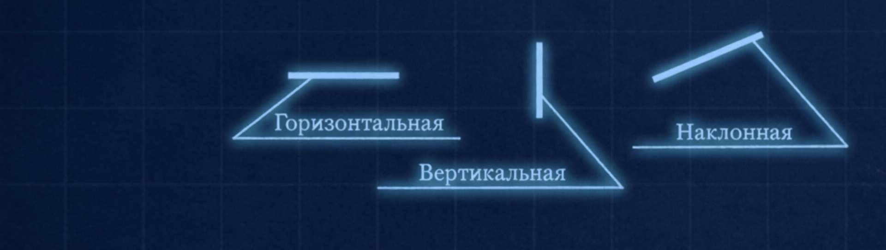

Суть раздела: познакомиться с простейшими геометрическими элементами, из которых строится любой чертёж.
Чертёж — это язык техники. Чтобы понимать его и уметь на нём говорить, необходимо чётко различать прямые и кривые линии, знать, чем параллельные прямые отличаются от перпендикулярных, что такое луч и угол, как образуются замкнутые фигуры.
1. Геометрические элементы
1.1. Прямая линия
Прямая может быть горизонтальной, вертикальной и наклонной.

1.2. Параллельные прямые
Прямые, лежащие в одной плоскости и никогда не пересекающиеся между собой, называются параллельными.

1.3. Перпендикулярные прямые
Прямые, которые пересекаются под углом 90°, называются перпендикулярными.

1.4. Луч
Луч — это часть прямой, имеющая начало, но не имеющая конца.

1.5. Угол
Два луча, выходящие из одной точки, образуют угол. Углы бывают:
- острые — меньше 90°;
- прямые — равны 90°;
- тупые — больше 90°.

1.6. Отрезок, ломаная и кривая линии
Отрезок — часть прямой, ограниченная двумя точками.
Ломаная — линия, состоящая из последовательно соединённых отрезков.
Кривая — линия, которая плавно меняет своё направление.

1.7. Окружность и дуга
Окружность — замкнутая кривая, все точки которой равноудалены от центра. Центр окружности и центровые линии показывают на чертеже штрихпунктирной линией.
Дуга — часть окружности, ограниченная двумя точками.

1.8. Замкнутые ломаные линии
Замкнутые ломаные линии образуют многоугольники.

1.9. Циркульные кривые
К циркульным кривым относятся овал, полуокружность и окружность.

1.10. Правильные и неправильные фигуры
Если все стороны и все углы фигуры равны, она называется правильной. Если стороны и углы не равны — неправильной.

2. Геометрические плоские фигуры
| Фигура | Определение | Существенные признаки | Несущественные признаки |
|---|---|---|---|
| Окружность | Геометрическое место точек, равноудалённых от центра | Представляет собой замкнутую циркульную кривую | Величина радиуса |
| Круг | Плоская фигура, ограниченная окружностью | Фигура, ограниченная одной кривой циркульной линией | Величина радиуса |
| Кольцо | Часть плоскости, ограниченная двумя окружностями, проведёнными из одного центра | Плоская фигура, имеющая внутреннее вогнутое и внешнее выпуклое очертания | Величины радиусов |
| Овал | Плоская выпуклая плавная циркульная замкнутая кривая | Образована двумя парами дуг окружностей разного диаметра | Величины радиусов дуг |
| Треугольник | Фигура, имеющая три стороны и три вершины | Если все стороны равны, то треугольник равносторонний | Длины сторон |
| Прямоугольник | Четырёхугольник, у которого все углы прямые | Соседние стороны расположены под прямыми углами | Величины противоположных сторон |
| Параллелограмм | Четырёхугольник, у которого противоположные стороны попарно равны и параллельны | Противоположные стороны попарно равны | Величины сторон |
| Ромб | Четырёхугольник, у которого все стороны равны и попарно параллельны. Углы не прямые | Диагонали перпендикулярны | Величины сторон |
| Трапеция | Четырёхугольник, у которого две противоположные стороны параллельны, а две другие — не параллельны | Верхнее основание параллельно нижнему, но не равно ему | Величины сторон |
| Квадрат | Четырёхугольник, у которого все углы прямые и стороны равны | Имеет четыре равные стороны, соседние стороны расположены под прямыми углами друг к другу | Величины стороны |
| Правильный многоугольник | Плоская фигура, все вершины которой равноудалены от центра и лежат на описанной окружности | Замкнутая ломаная линия, отрезки которой равны и составляют равные углы | Величины радиуса описанной окружности и отрезков |
3. Геометрические тела
Все геометрические тела делятся на тела вращения и многогранники.
3.1. Тела вращения
| Тело | Определение | Существенные признаки | Несущественные признаки |
|---|---|---|---|
| Шар | Образован вращением круга или полукруга вокруг оси, проходящей по его диаметру | Со всех сторон видим круглым | Величина радиуса |
| Цилиндр | Образован вращением прямоугольника вокруг одной из его сторон | Имеет два плоских основания, ограниченных окружностями, и боковую цилиндрическую поверхность | Величина радиуса окружности, высота тела |
| Конус | Образован вращением прямоугольного треугольника вокруг одного из его катетов | Имеет одно основание (круг) и коническую боковую поверхность | Длина радиуса окружности, высота тела |
| Тор | «Кольцо» — вращением круга вокруг оси вне его; «яблоко» — вращением большей части круга вокруг хорды; «лимон» — вращением меньшей части круга вокруг хорды | Имеет кривую поверхность | Длина радиуса круга |
3.2. Многогранники
| Тело | Определение | Существенные признаки | Несущественные признаки |
|---|---|---|---|
| Куб | Тело, ограниченное шестью квадратами (правильный шестигранник) | Все грани представляют собой квадраты | Величина стороны |
| Призма | Геометрическое тело, у которого основания — равные и параллельные многоугольники, а боковые грани — четырёхугольники | Основания параллельны между собой. Если боковые грани перпендикулярны основаниям, призма — прямая, если не перпендикулярны — наклонная | Величина основания и высоты тела |
| Параллелепипед | Прямоугольный параллелепипед — неправильная прямая четырёхугольная призма | Основания равны и параллельны между собой | Величина основания, высота тела |
| Пирамида | Многогранник, у которого основание — многоугольник, боковые грани — треугольники, имеющие общую вершину | Имеет одно основание и вершину | Величина основания, высота тела |
4. Элементы геометрических тел
4.1. Призмы
- 1 — верхнее основание
- 2 — нижнее основание
- 3 — грани
- 4 — рёбра
- 5 — вершины
- 6 — сторона основания (ребро)
I, II — наклонные призмы. III, IV — прямые призмы: III — правильная прямая четырёхугольная призма; IV — правильная прямая треугольная призма.
4.2. Пирамиды
- 1 — основание
- 2 — боковые грани
- 3 — рёбра
- 4 — вершина
- 5 — высота (осевая линия)
- 6 — сторона основания (ребро)
I — правильная прямая четырёхугольная усечённая пирамида. II, III — полные пирамиды: II — правильная прямая треугольная пирамида; III — правильная прямая шестиугольная пирамида.
4.3. Цилиндры
- 1 — верхнее основание
- 2 — нижнее основание
- 3 — высота (IV), высота и ось вращения (I, II, III)
- 4 — очерковая образующая
- 5 — цилиндрическая поверхность
- 6 — ось
I, II, III — прямые цилиндры. IV — наклонный цилиндр.
4.4. Конусы
- 1 — основание
- 2 — вершина
- 3 — очерковая образующая
- 4 — высота (II), высота и ось вращения (I, III)
- 5 — коническая поверхность
- 6 — ось
I — прямой конус. II — наклонный конус. III — усечённый конус.
5. Анализ геометрической формы объектов
Любую деталь можно мысленно расчленить на простые геометрические тела. Форма детали может быть образована:
- суммой геометрических тел;
- разностью геометрических тел;
- сочетанием суммы и разности.
Пример. Форма детали «Ползун» образована разностью геометрических тел и представляет собой прямоугольный параллелепипед (или прямую четырёхугольную призму), в верхней части которого выполнен вырез (паз), имеющий форму прямоугольного параллелепипеда (или прямой четырёхугольной призмы), а в нижней — вырез в форме полуцилиндра.
Ползун, сталь
Пример. Деталь представляет собой сочетание суммы и разности геометрических тел и образована тремя соосными цилиндрами (т. е. имеющими общую ось). Вдоль оси вращения детали проходит сквозное соосное цилиндрическое отверстие.
6. Форматы
Оформление школьного формата.
210 × 297 мм
- Рамка чертежа.
- Поле для брошюровки.
- Место для основной надписи.
ЗАПОМНИ: основная надпись всегда в правом нижнем углу.
Форма основной надписи для школьного формата
Графы: «Чертил», «Проверил», название школы, класса, наименование детали, материал, масштаб, номер работы.
7. Линии чертежа
| № | Наименование линий | Толщина | Назначение |
|---|---|---|---|
| 1 | Сплошная основная толстая | S | Линии видимого контура |
| 2 | Сплошная тонкая | S/3 | Линии выносные и размерные. Линии-выноски и полки линий-выносок |
| 3 | Штриховая | S/2 | Линии невидимого контура |
| 4 | Штрихпунктирная тонкая | S/3 | Линии осевые и центровые |
- Штриховая и штрихпунктирная линии пересекаются и заканчиваются штрихами.
- Штрихпунктирная линия выводится за контур изображения на 2 мм.
8. Чертёжный стандартный шрифт
Размеры шрифта (h): 2,5; 3,5; 5; 7; 10; 14; 20; 28; 40.
Угол наклона шрифта типа Б: 75°.
Классификация прописных букв
Содержащие вертикальные и горизонтальные элементы:
Г П Н Т Е Ц Ш Щ
Содержащие наклонные элементы:
И Х К Ж М А Л Д
Содержащие прямолинейные элементы и дуги:
Ч У Б В Р Я О С Э Ю Ф Ы З Ь
Классификация строчных букв
- Опорные: и, о
- Производные: п, у, ч, т, ш, щ, а, б, в, д, ю, р, е, с
- Характерные: г, ж, з, к, л, м, н, ф, х, ч, ь, я
0 1 2 3 4 5 6 7 8 9
9. Нанесение размеров на чертежах
9.1. Основные понятия
- Размеры элементов — размеры величины вырезов, выступов, отверстий, пазов и т. д.
- Координирующие размеры — размеры, показывающие расположение элементов относительно контура детали и друг друга.
- Габаритные размеры — наибольшие размеры детали по длине, высоте, толщине.
9.2. Нанесение размеров диаметров окружностей
- Если диаметр меньше 12 мм, то размерные числа и стрелки располагают снаружи окружности.
- Если диаметр больше 12 мм и меньше 40 мм, то стрелки располагают внутри элемента, размерные числа — снаружи.
- Если диаметр 40 мм и более, то размерные числа и стрелки располагают внутри окружности.
9.3. Нанесение размеров радиусов дуг
Размеры радиусов дуг наносятся аналогично размерам окружностей.
9.4. Нанесение размеров углов
Угловые размеры указывают в градусах, минутах и секундах с обозначением единицы измерения.
□10 Ø15 R14 S3 №
10. Масштабы
| Натуральный масштаб | 1 : 1 |
| Масштаб увеличения | 2 : 1; 2,5 : 1; 4 : 1 … 100 : 1 |
| Масштаб уменьшения | 1 : 2; 1 : 2,5; 1 : 4 … 1 : 100 |
Масштаб — это отношение линейных размеров изображения к линейным размерам объекта.
Запись в основной надписи: 1:1, 2:1, 1:5.
Запись на поле чертежа: М1:1, М2:1, М1:5.
11. Алгоритм построения чертежа «плоской» детали
Чертёж плоской детали, симметричной относительно двух плоскостей симметрии.
- Анализ геометрической формы и симметричности детали.
Деталь имеет форму прямоугольного параллелепипеда (или прямой четырёхугольной призмы), у которого в противоположных торцовых гранях имеются пазы в форме прямоугольных параллелепипедов. В центре — сквозное цилиндрическое отверстие. Деталь симметрична относительно двух плоскостей симметрии.
- Установление главного вида, анализ его графического состава.
Прямоугольник, имеющий прямоугольные вырезы с двух противоположных сторон и в центре — круг. Изображение симметрично относительно двух осей симметрии.
- Выбор положения формата и масштаба изображения.
Если длина детали больше высоты, то по горизонтали; если высота больше длины, то по вертикали.
- Определение рабочего поля чертежа.
- Построение габаритного прямоугольника:
а — провести оси симметрии;
б — отложить размер по длине;
в — отложить размер по высоте. - Построение очертания изображения детали:
а — внешнего контура детали;
б — внутреннего контура детали. - Нанесение размеров:
а — по длине;
б — по высоте;
в — по толщине. - Обводка:
а — окружности и дуги;
б — горизонтальные линии;
в — вертикальные линии;
г — наклонные линии. - Проверка чертежа, заполнение основной надписи.